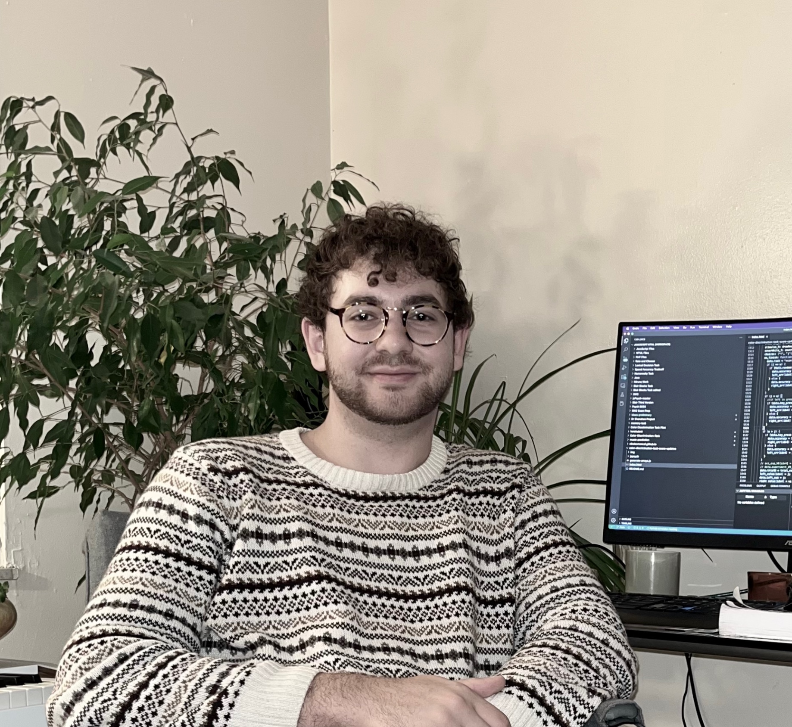

|
I am a fourth-year undergraduate student studying Computer Science at The Ohio State University. I am fortunate to have my undergraduate education fully funded by the Eminence Fellowship and Stamps Scholarship. My research interests entail using machine learning to build and improve cognitive models. After the completion of my undergraduate degree, I intend to pursue a graduate degree in the domain of cognitive psychology and computer science.
I am grateful to have worked under the guidance of several incredible mentors throughout my undergraduate education, including Tai Sing Lee (CMU), Ian Krajbich (UCLA), Daniel Shanahan (Northwestern), Huan Sun (OSU), and Yu Su (OSU). |
|